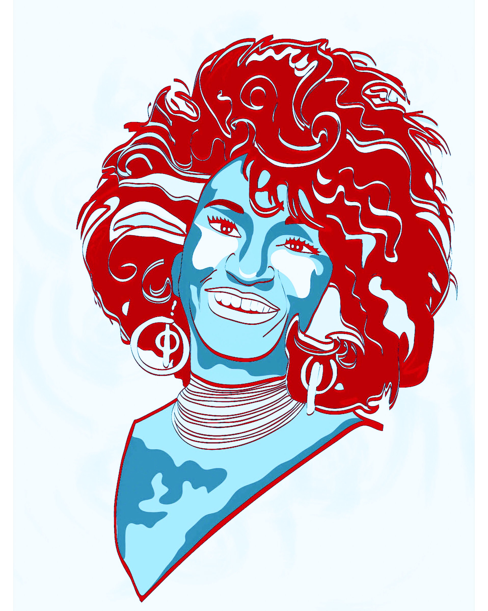

This page contains the first 5 images that represent me
5Images This image marks the first time I felt confident using Adobe Illustrator, which was like a month ago. I took this picture while being at a family barbeque near my uncles auto shop. The serenity in the colors remind me to always stay calm. This photo is what I see when I look out my window, it represents me because it reminds me to be thankful for having a roof over my head.

Celia Cruz is my favorite spanish music artist, her life story inspires me to go for what I want. I made this poster for a dog that I got attached to at an internship. I walked, fed and played with her and now I just feel like she's a part of me.